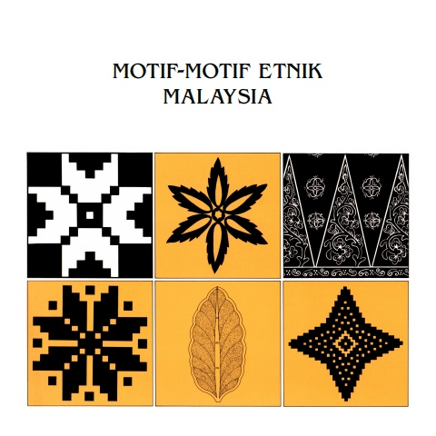
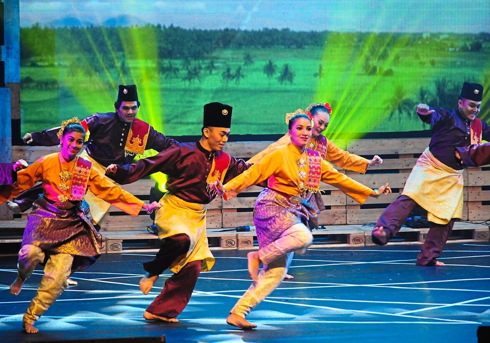

Songket
Kain tenun bermotif yang dikenal melalui penggunaan benang berkilau. Prosesnya membutuhkan ketelitian dan keterampilan tinggi.
Busana, tekstil, seni pertunjukan, alat musik, dan rumah tradisional memperlihatkan pengetahuan yang diwariskan lintas generasi.
Tekstil bukan sekadar hiasan; ia juga berkaitan dengan keterampilan, perayaan, tata busana, dan identitas komunitas.
Kain tenun bermotif yang dikenal melalui penggunaan benang berkilau. Prosesnya membutuhkan ketelitian dan keterampilan tinggi.

Busana tradisional yang tampil dalam berbagai gaya, bahan, dan warna. Penggunaannya dapat dijumpai pada acara resmi maupun keseharian.

Ukiran, anyaman, batik, dan layang-layang tradisional memadukan fungsi, kreativitas, serta simbol visual yang khas.

Rumah panggung membantu merespons kelembapan, aliran udara, dan kondisi lingkungan. Bentuk atap, tangga, serambi, serta ukiran dapat berbeda menurut wilayah.

Teater tradisional Kelantan yang memadukan lakon, musik vokal dan instrumental, gerak, cerita, dan busana.

Alat musik perkusi bingkai yang dimainkan bersama-sama untuk membangun ritme dalam acara komunitas dan perayaan.

Seni tradisional Melaka yang menggabungkan musik, nyanyian, serta pantun berbalas sebagai sarana menyampaikan perasaan dan nasihat.
Pengakuan membantu meningkatkan perhatian, tetapi keberlanjutan tetap bergantung pada pelaku budaya, komunitas, pendidikan, dan pewarisan antargenerasi.